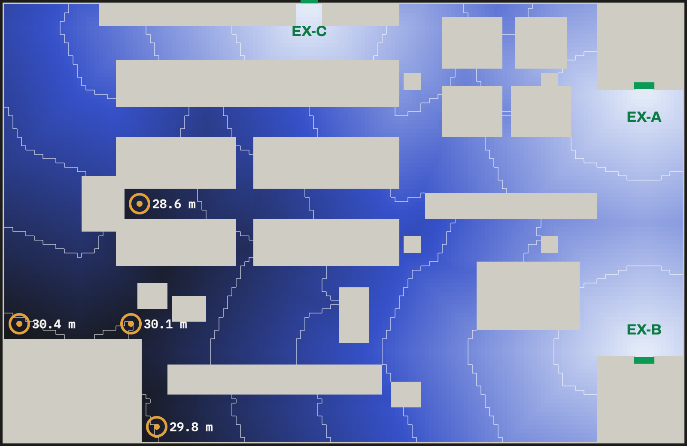

Factory egress · the spawn

29.8 m
on foot to the nearest exit from this spawn
3 exits · 5 decoys
two stairs and an external door; a lift, two shutters, an office and a sealed exit
14 signs
illumination, size, mounting and rated viewing distance on each
Visual Vibes · factory egress · walking distance on a 0.25 m grid, lighter is closer to an exit